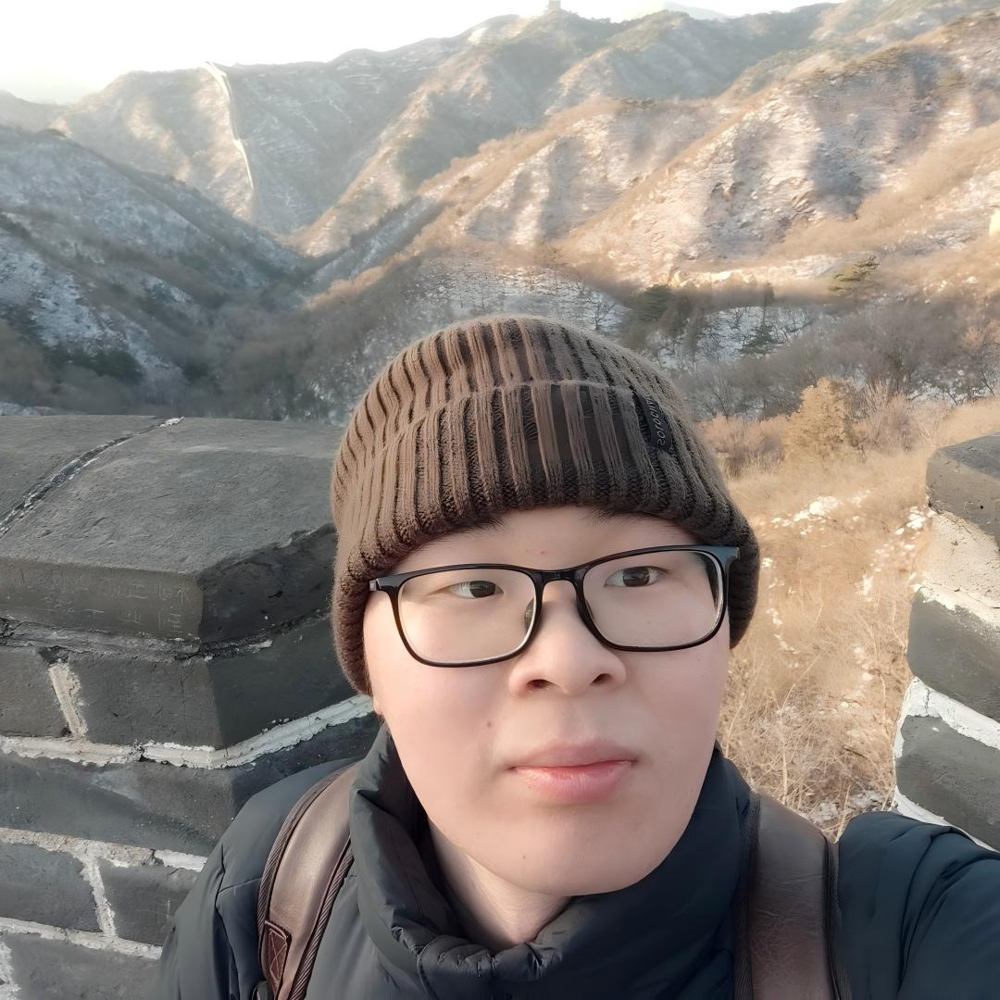

Analysis & Partial Differential Equations
Zhilong Xue
I am a postdoctoral researcher at the Academy of Mathematics and Systems Science, Chinese Academy of Sciences, mentored by Quoc-Hung Nguyen.
I received my PhD in Mathematics from Beijing Normal University in 2025 under the supervision of Liutang Xue.
My research focuses on incompressible fluid equations and vortex patch dynamics. My recent interests also include kinetic equations, particularly Landau damping for Vlasov–Poisson systems.
- Affiliation
- AMSS, Chinese Academy of Sciences
- Location
- Beijing, China
News
Announcements for upcoming talks and meetings will be posted here.
